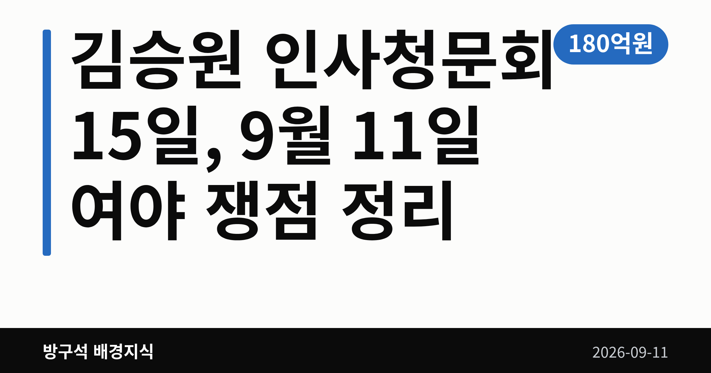
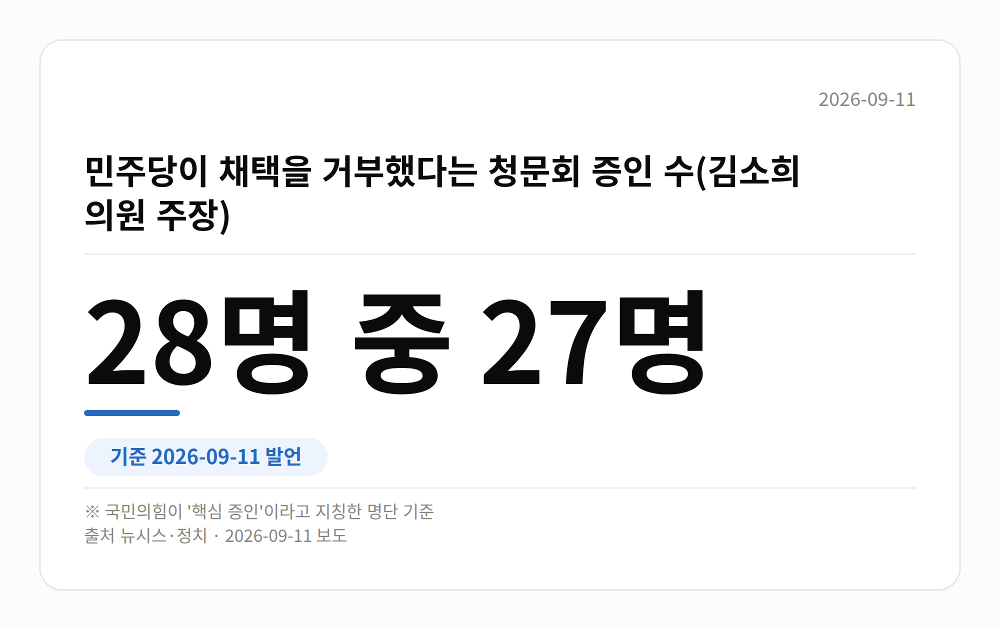

이 글은 2026년 9월 11일 기준으로 정리한 내용입니다.
9월 11일 정치권의 중심은 김승원 인사청문회였습니다. 국민의힘은 청문회 대신 국정조사를 하자고 했고, 더불어민주당은 후보자를 지키겠다고 맞섰습니다. 청문회는 오는 9월 15일로 예정돼 있습니다.
정점식 국민의힘 원내대표는 11일 오전 국회 원내대책회의에서 "김승원 후보자는 인사청문회가 아니라 국정조사를 받아야 한다"고 말했습니다.
국정조사(국회가 특정 사안을 정해 따로 조사하는 절차)는 인사청문회보다 다루는 범위가 넓습니다. 정 원내대표는 "단순한 개인 비리가 아니라 로비와 주가조작이 등장하는 게이트"라고 주장했습니다.
그는 KH필룩스를 언급하며 배상윤 KH그룹 회장을 "인터폴 적색수배자"라고 표현하기도 했습니다. 모두 회의에서 나온 주장이고, 수사나 판결로 확인된 내용은 오늘 자료에 없습니다.
같은 날 김민석 더불어민주당 대표는 충북 청주 충북도청 최고위원회의에서 "지켜보면 지켜볼수록 잘된 인사"라며 "지킬 것"이라고 말했습니다. 청문회는 안정적으로 진행하면 된다는 취지입니다.
김 대표는 한동훈 전 대표를 겨냥해 "관종 정치는 검찰 잔당의 내란 연속 행위"라고도 했습니다. 이에 대한 한 전 대표의 반응은 오늘 자료에서 확인되지 않았습니다.
| 항목 | 수치 |
|---|---|
| 청문회 예정일 | 9월 15일 |
| 작전 세력 추정 수익 | 180억원 |
| 손실을 봤다는 개미투자자 | 3만명 |
| 증인 채택 거부 | 28명 중 27명 |
| 용혜인 후보 부정 응답 | 72.2% |
위 두 수치는 정점식 원내대표가 회의에서 밝힌 내용입니다. 아래 두 줄은 국민의힘 김소희 의원이 말한 숫자입니다.
특히 72.2%는 조사기관과 조사 기간, 오차범위가 오늘 자료에 나오지 않습니다. 숫자 자체로만 받아들이시는 편이 안전합니다.

지금 정해진 것은 15일이라는 날짜뿐입니다. 국정조사나 특검은 국민의힘이 요구한 단계이고, 실제로 열리려면 국회 의결을 거쳐야 합니다.
증인 채택도 여야 간사 협의 사항이라 청문회 직전까지 조정될 수 있습니다. 의혹은 아직 제기된 단계이며, 김승원 후보자 본인의 해명은 오늘 자료에서 확인되지 않았습니다.
국회의원 발의 법률안 219건. 가장 최근은 공항시설법 일부개정법률안(임문영의원 등 10인).
본회의 처리 법률안 1건 — 철회 1건
이번 주 등록된 선거 여론조사 11건
열린국회정보·중앙선거여론조사심의위원회 자료를 직접 셌습니다. 여론조사의 자세한 사항은 중앙선거여론조사심의위원회 홈페이지를 참조하세요.
여러분은 인사청문회에서 증인 채택이 왜 매번 쟁점이 된다고 느끼시나요?
댓글로 알려 주시면 다음 글에 반영하겠습니다.